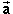
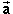
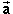

and
make equal to some multiple of vector
.
and
make equal to some multiple of vector
.
You can drag the tip of vector and
make equal to some multiple of vector
.
You can also drag the tip of vector and make equal to
some multiple of vector .
Try to arrange things so that is
equal to a negative multiple of ,
e.g.,
= -1.5,
= -.